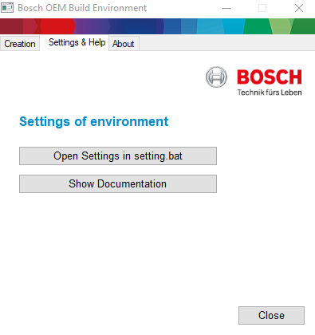
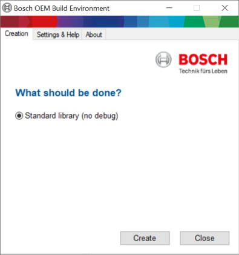
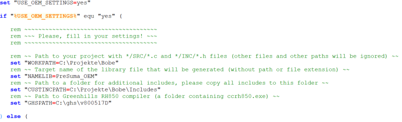

Bosch OEM Build Environment
With this package you get all needed files and information to create a steering library.
Index
In this document you find the following information:
Package content
| Path and Filename | Used by | Description |
|---|---|---|
| BOBE.exe | LI | The GUI application which is explained in Usage of BOBE GUI. |
| create_exec.bat | ES | Used by the GUI to create executables, can also be directly called for Manual Usage of BOBE. |
| create_lib.bat | LI | Used by the GUI to create libraries, can also be directly called for Manual Usage of BOBE. |
| settings.bat | LI | All application settings that can be modified by the user. |
| BoschInputs/ | L | |
| a2l_merge.ini | Config file needed for A2L. | |
| a2l_updater.ini | E | Config file needed for A2L. |
| cyg*.dll | ES | Cygwin libraries needed for sed.exe. |
| linkseglayer.ld | ES | Link segment layer file. |
| merge.py | E | A2L merge helper python script. |
| odx_config.ocnf | E | Config file for ODX creation. |
| pedscript.ped | E | Rule set for ped. |
| searchandreplace.exe | E | Simple search&replace command. |
| sed.exe | ES | Complex search&replace command from the Unix world. |
| updater.sed | ES | The search&replace rule set. |
| Data/ | E | |
| 3G1300D7000T02_RG1_X_VARI04_with_backup_patched.hex | E | Reference hex file. |
| ped/ | E | PED++ application. |
| Includes/ | LI | Include files from Bosch. |
| Compiler.h | LESIX | c:\eps_deploy\BitBucketBuild\include\Compiler.h. |
| Compiler_Cfg.h | LESIX | c:\eps_deploy\BitBucketBuild\include\Compiler_Cfg.h. |
| Os.h | LESIX | c:\eps_deploy\BitBucketBuild\include\Os.h. |
| Os_Cfg.h | LESIX | c:\eps_deploy\BitBucketBuild\include\Os_Cfg.h. |
| Os_Compiler_Cfg.h | LESIX | c:\eps_deploy\BitBucketBuild\include\Os_Compiler_Cfg.h. |
| Os_Metrics.h | LESIX | c:\eps_deploy\BitBucketBuild\include\Os_Metrics.h. |
| Os_Safe_Cfg.h | LESIX | c:\eps_deploy\BitBucketBuild\include\Os_Safe_Cfg.h. |
| Platform_Types.h | LESIX | c:\eps_deploy\BitBucketBuild\include\Platform_Types.h. |
| Rte.h | LESIX | c:\eps_deploy\BitBucketBuild\include\Rte.h. |
| Rte_ASC_SWC.h | LESIX | c:\eps_deploy\BitBucketBuild\include\Rte_ASC_SWC.h. |
| Rte_ASC_SWC_Type.h | LESIX | c:\eps_deploy\BitBucketBuild\include\Rte_ASC_SWC_Type.h. |
| Rte_Cfg.h | LESIX | c:\eps_deploy\BitBucketBuild\include\Rte_Cfg.h. |
| Rte_Const.h | LESIX | c:\eps_deploy\BitBucketBuild\include\Rte_Const.h. |
| Rte_DataHandleType.h | LESIX | c:\eps_deploy\BitBucketBuild\include\Rte_DataHandleType.h. |
| Rte_Intl.h | LESIX | c:\eps_deploy\BitBucketBuild\include\Rte_Intl.h. |
| Rte_MemMap.h | LESIX | c:\eps_deploy\BitBucketBuild\include\Rte_MemMap.h. |
| Rte_SAC_SWC.h | LESIX | c:\eps_deploy\BitBucketBuild\include\Rte_SAC_SWC.h. |
| Rte_SAC_SWC_Type.h | LESIX | c:\eps_deploy\BitBucketBuild\include\Rte_SAC_SWC_Type.h. |
| Rte_Type.h | LESIX | c:\eps_deploy\BitBucketBuild\include\Rte_Type.h. |
| Std_Types.h | LESIX | c:\eps_deploy\BitBucketBuild\include\Std_Types.h. |
| Libraries/ | ES | Various libraries. |
| Mainpath_VARI04_Dev_Lib.a | ES | Dynamic library (specific for this release). |
| Mainpath_VARI04_Lib.a | ES | Dynamic library (specific for this release). |
| HWLIB_rel_HW46_FOC13_Faint_off_Lib.a | ES | Static library (under version control). |
| MQB37W_ASC_SAC.a | ES | Static library (under version control). |
| DSFxp.lib | ES | Static library (under version control). |
| RTAOS.a | ES | Static library (under version control). |
| BuildOutput/ | L | All build results will appear here. |
| standard/ | L | Build results for Standard library (no debug). |
| standard_executable_file/ | E | Build results for Standard executeable files (no debug). |
| stack/ | S | Build results for Stack measurement. |
| sillib/ | I | Build results for Simulation library. |
| Documentation/ | Contains this documentation. | |
| documentation.html | This documentation. | |
| favicon.ico | Icon for the documentation.html file. | |
| img*.png | Images for the documentation.html file. | |
| L == Standard library (no debug) | ||
| E == Standard executeable files (no debug) | ||
| S == Stack measurement |
Usage of BOBE GUI
To create the library and executable files, please do the following:


You find all warnings and errors in the BuildOutput/<selected process>/Logs folder.
Manual Usage of BOBE
To create the library and executable files manually or from within user defined scripts, please do the following:
Example for a manual build of the Standard executeable files process:
del /q BuildOutput\standard_executable_file\Logs\CreateLib.log call create_lib.bat standard_executable_file if not exist BuildOutput\standard_executable_file\Logs\CreateLib.log ( echo Library building failed exit /b 1 ) del /q BuildOutput\standard_executable_file\Logs\CreateExec.log call create_exec.bat standard_executable_file if not exist BuildOutput\standard_executable_file\Logs\CreateExec.log ( echo Execution building failed exit /b 1 )
Settings
This settings can be changed in settings.bat (please only change the values before the ) else ( line, everything below will be ignored):

This list contains all settings that can be changed by the user:
| Name of the setting | Used by | Description |
|---|---|---|
| WORKPATH | LI | Path to your project with */SRC/*.c and */INC/*.h files (other files and other paths will be ignored). |
| NAMELIB | LI | Target name of the library file that will be generated (without path or file extension). |
| CUSTINCPATH | LI | Path to a folder for additional includes, please copy all includes to this folder. |
| GHSPATH | L | Path to Greenhills RH850 compiler (a folder containing ccrh850.exe). |
| SWVERCUST | E | Software version number that will be used for ODX Create (shall have a length of 4 characters). |
| PYTHONCMD | E | Path to a python interpreter version 2.7.x (including the name of the executable). |
| A2LUPDATERCMD | E | Path to an A2L updater command (including the name of the executable). |
| A2LMERGEUPDATEPATH | E | Path to an A2L updater folder with *.a2l files (other files will be ignored) for merge and update. |
| ODXCREATEPATH | E | Path to an ODXCreate command (a folder containing ODXCreate.exe). |
| FDSSIGKEYFILE | E | Full path to a signature key file (Flashdatensicherheit) that will be used for ODX Create. |
| FDSPRJCFGFILE | E | Full path to a project config file (Flashdatensicherheit) that will be used for ODX Create. |
| FCT_STACK_SIZE | S | Root functions for stack size measurement. |
| MSVCPATH | I | Path to MSVC Compiler (a folder containing bin/cl.exe or bin/amd64/cl.exe depending on MSVCBITOPT). |
| MSVCBITOPT | I | Architecture to use for MSVC Compiler: Either 32 for x86 or 64 for amd64. |
| QNX_HOST | X | Path to Scalexio QNX Compiler's host related components (a folder containing usr/bin/ntox86-gcc.exe). See Getting Started for details. |
| QNX_TARGET | X | Path to Scalexio QNX Compiler's target related components (a folder containing platform/ sub folder). See Getting Started for details. |
| L == Standard library (no debug) | ||
| E == Standard executeable files (no debug) | ||
| S == Stack measurement | ||
| I == Simulation library |
Available Processes
The following processes can be selected either within the GUI BOBE.exe or manually by invoking the .bat files with the target name:
Standard library (no debug)
This creates the standard library without debug information.
This step uses all settings and all inputs marked with an L.
To manually execute this step, call create_lib.bat standard from a DOS prompt.
The software listed in Target Environment marked with an L needs to be installed on the target machine.
The following files will be created in the BuildOutput directory:
| Path and Filename | Description |
|---|---|
| standard/ | All files created during build process will be collected here. |
| HFiles/ | All custom header files that are used during build process will be collected here. |
| Logs/ | All log files that are created during build process will be collected here. |
| CreateLib.log | This log file contains all steps executed during library creation if the process was successful. |
| Error.log | This log file contains all steps executed up to the point of error if the process was not successful. |
| NAMELIB_compile.log | This log file contains all output of compiler and linker. |
| Objects/ | All temporary object files that are used during build process will be collected here. |
| *.o | This files contain the compiled binary code of a C file. |
| *.d | This files contain a list of included header files for the corresponding C file (in Make target format). |
| MODULES_NAMELIB_RamRom.log | Lists the RAM and ROM size of all object files. |
| SWC_NAMELIB_RamRom.log | Lists the RAM and ROM size of the library. |
| NAMELIB.a | The created library. It can be used at Bosch to integrate your OEM software into Bosch EPS. |
Standard executeable files (no debug)
This creates the standard executeable files without debug information.
This step uses all settings and all inputs marked with an E.
To manually execute this step for PAS, call create_lib.bat standard_executable_file, followed by create_exec.bat standard_executable_file from a DOS prompt.
The software listed in Target Environment marked with an E needs to be installed on the target machine.
| Path and Filename | Description |
|---|---|
| standard_executable_file/ | All files created during build process will be collected here. |
| HFiles/ | All custom header files that are used during build process will be collected here. |
| Logs/ | All log files that are created during build process will be collected here. |
| CreateLib.log | This log file contains all steps executed during library creation if the process was successful. |
| CreateExec.log | This log file contains all steps executed during executable creation if the process was successful. |
| Error.log | This log file contains all steps executed up to the point of error if the process was not successful. |
| NAMELIB_a2l_update.log | This log file contains all output of the A2L updater command. |
| NAMELIB_compile.log | This log file contains all output of compiler and linker. |
| NAMELIB_elf.log | This log file contains all output of ELF compilation. |
| NAMELIB_hex.log | This log file contains all output of HEX file creation. |
| NAMELIB_PED.log | This log file contains all output of pedkdo during PED creation. |
| Objects/ | All temporary object files that are used during build process will be collected here. |
| *.o | This files contain the compiled binary code of a C file. |
| *.d | This files contain a list of included header files for the corresponding C file (in Make target format). |
| 3G1300D7000T02_RG1_X_VARI04__NAMELIB.elf | The compiled ELF file. |
| 3G1300D7000T02_RG1_X_VARI04__NAMELIB.map | Contains the addresses of all sections and global symbols. |
| 3G1300D7000T02_RG1_X_VARI04__NAMELIB_update.map | The MAP file for the A2L updater (ASAP2Updater.exe). |
| 3G1300D7000T02_RG1_X_VARI04__NAMELIB_StartAtDrive.hex | Final hex file as generated by the PAD script. |
| FL__SWVERCUST_NAMELIB.odx | This odx file can be used for flashing via ODIS. |
| MODULES_NAMELIB_RamRom.log | Lists the RAM and ROM size of all object files. |
| SWC_NAMELIB_RamRom.log | Lists the RAM and ROM size of the library. |
| NAMELIB.a | The created library. |
Standard executeable files (SENT) (no debug)
This creates the standard executeable files without debug information.
This step uses all settings and all inputs marked with an E.
To manually execute this step for SENT, call create_lib.bat standard_SENT, followed by create_exec.bat standard_SENT from a DOS prompt.
The software listed in Target Environment marked with an E needs to be installed on the target machine.
| Path and Filename | Description |
|---|---|
| standard_SENT/ | All files created during build process will be collected here. |
| HFiles/ | All custom header files that are used during build process will be collected here. |
| Logs/ | All log files that are created during build process will be collected here. |
| CreateLib.log | This log file contains all steps executed during library creation if the process was successful. |
| CreateExec.log | This log file contains all steps executed during executable creation if the process was successful. |
| Error.log | This log file contains all steps executed up to the point of error if the process was not successful. |
| NAMELIB_a2l_update.log | This log file contains all output of the A2L updater command. |
| NAMELIB_compile.log | This log file contains all output of compiler and linker. |
| NAMELIB_elf.log | This log file contains all output of ELF compilation. |
| NAMELIB_hex.log | This log file contains all output of HEX file creation. |
| NAMELIB_PED.log | This log file contains all output of pedkdo during PED creation. |
| Objects/ | All temporary object files that are used during build process will be collected here. |
| *.o | This files contain the compiled binary code of a C file. |
| *.d | This files contain a list of included header files for the corresponding C file (in Make target format). |
| 3G1300D7000T02_RG1_X_VARI04__NAMELIB.elf | The compiled ELF file. |
| 3G1300D7000T02_RG1_X_VARI04__NAMELIB.map | Contains the addresses of all sections and global symbols. |
| 3G1300D7000T02_RG1_X_VARI04__NAMELIB_update.map | The MAP file for the A2L updater (ASAP2Updater.exe). |
| 3G1300D7000T02_RG1_X_VARI04__NAMELIB_StartAtDrive.hex | Final hex file as generated by the PAD script. |
| FL__SWVERCUST_NAMELIB.odx | This odx file can be used for flashing via ODIS. |
| MODULES_NAMELIB_RamRom.log | Lists the RAM and ROM size of all object files. |
| SWC_NAMELIB_RamRom.log | Lists the RAM and ROM size of the library. |
| NAMELIB.a | The created library. |
Stack measurement
This creates stack measurement data.
This step uses all settings and all inputs marked with an S.
To manually execute this step, call create_lib.bat stack, followed by create_exec.bat stack from a DOS prompt.
The software listed in Target Environment marked with an S needs to be installed on the target machine.
| Path and Filename | Description |
|---|---|
| stack/ | All files created during build process will be collected here. |
| HFiles/ | All custom header files that are used during build process will be collected here. |
| Logs/ | All log files that are created during build process will be collected here. |
| CreateLib.log | This log file contains all steps executed during library creation if the process was successful. |
| CreateExec.log | This log file contains all steps executed during executable creation if the process was successful. |
| Error.log | This log file contains all steps executed up to the point of error if the process was not successful. |
| NAMELIB_compile.log | This log file contains all output of compiler and linker. |
| NAMELIB_elf.log | This log file contains all output of ELF compilation. |
| Objects/ | All temporary object files that are used during build process will be collected here. |
| *.o | This files contain the compiled binary code of a C file. |
| *.d | This files contain a list of included header files for the corresponding C file (in Make target format). |
| 3G1300D7000T02_RG1_X_VARI04__NAMELIB.elf | The compiled ELF file. |
| 3G1300D7000T02_RG1_X_VARI04__NAMELIB.map | Contains the addresses of all sections and global symbols. |
| 3G1300D7000T02_RG1_X_VARI04__NAMELIB_update.map | The MAP file for the A2L updater (ASAP2Updater.exe). |
| MODULES_NAMELIB_RamRom.log | Lists the RAM and ROM size of all object files. |
| SWC_NAMELIB_RamRom.log | Lists the RAM and ROM size of the library. |
| NAMELIB_StackSize.log | The stack usage determined via gstack.exe for all functions in FCT_STACK_SIZE. |
| NAMELIB.a | The created library. |
Simulation library
This creates the SiL simulation library.
This step uses all settings and all inputs marked with an I.
To manually execute this step, call create_lib.bat sillib from a DOS prompt.
The software listed in Target Environment marked with an I needs to be installed on the target machine.
| Path and Filename | Description |
|---|---|
| sillib/ | All files created during build process will be collected here. |
| HFiles/ | All custom header files that are used during build process will be collected here. |
| Logs/ | All log files that are created during build process will be collected here. |
| CreateLib.log | This log file contains all steps executed during library creation if the process was successful. |
| Error.log | This log file contains all steps executed up to the point of error if the process was not successful. |
| NAMELIB_SiL_compile.log | This log file contains all output of compiler and linker. |
| ObjectsSiL/ | All temporary object files that are used during build process will be collected here. |
| *.obj | This files contain the compiled binary code of a C file. |
| NAMELIB_SiL_MSVCBITOPTbit.lib | The file can be used at OEM and at Bosch to create a SiL simulation model of the EPS. |
Target Environment
The following software needs to be installed on the target machine:
| Name of the application | Used By | Tested Version | Release Date |
|---|---|---|---|
| Python | E | 2.7.2 | 2011-06-11 |
| Vector ASAP2 Toolkit | E | 4.3 | 2007-01-24 |
| ODX Create | E | 2.22 | 2018-03-27 |
| Green Hills RH850 Compiler | L | 2015.1.7 | 2015-10-22 |
| Microsoft Visual Studio Professional (*) | I | 2015 14.0.25425.01 Update 3 | 2016-06-27 |
| dSpace RCP and HIL Software | X | 2018A 18.1.0.197 (x64) | 2018-06-12 |
| L == Standard library (no debug) | |||
| E == Standard executeable files (no debug) | |||
| S == Stack measurement | |||
| I == Simulation library | |||
| * == for compilation without further debugging the Express version may be sufficient |
Specifications
The following specifications apply to this software package:
| Specification | Value |
|---|---|
| Project name | "100FIT" |
| Customer identifier | |
| Bosch Label | |
| Build Timestamp | Tue 02/24/2026 |
| AUTOSAR version | 3.2 |
| Supported ASAP version | 9.0 |
Pitfalls and FAQ
The following common problems and mistakes are currently known:
Your modifications in settings.bat do not have any effect?
Please check if you are writing in the upper section, before the ) else ( line and make sure that the first line sets BOBE_USE_OEM_SETTINGS_AT_OEM to yes. Also check that you do not the same setting twice (inside the upper block) and that it's not commented out (starting with :: or rem).
"Access denied" errors appear in the log?
Please check that you unzipped the BOBE to a directory with full write access (do NOT use a network share). Also check if another instance of BOBE or one of its command lines may still run in the background and blocking a file.
"No such file or directory" or "Syntax error" during batch file execution?
Please check if any path in your settings.bat contains spaces. Try to avoid them by using the short DOS name format instead: Open command prompt in the directory containing the problematic file name and type dir /x to see the short name. Replace the path in the settings.bat with the short name. For example: C:\PROGRA~1 instead of C:\Program Files.
The script executions stops without creating any output in Log folder:
This may be caused by an internal error in the script. Please check if there are any ...-running.log files directly in the BuildOutput/ directory. You can also try to run the scripts from command line (as explained in the process steps) and/or modify the first line of the scripts to @echo on.
© Robert Bosch Automotive Steering GmbH Tue 02/24/2026